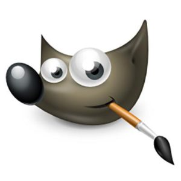
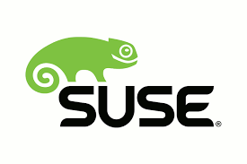

(http://es.wikipedia.org/wiki/Geek)
que se podria traducir al castellano como friki.
Las definiciones de software libre estipula los criterios que se tiene que cumplir para un programa sea considerado libre
De vez en cuando modificamos esta definicion para clasificarla o para resolver problemas sobre cuestiones delicadas
mas abajo en esta pagina, en la seccion Historial, se puede consultar la lista de modificaciones que afectan la definicion de software libre
"software libre" es el software que respeta la libertad de los usuarios y la comunidad. En grandes lineas, significan que los usuarios tienen la libertad para ejecutar, copiar, distribuir, estudiar,
modificar y mejorar el software. Es decir, el "software libre" es una cuestion de libertad, no de precio. Para entender el concepto. piense en "libre" como en "libre
expresion" no como en barra libre.
la libertad de ejecutar el programa como se desea, con cualquier proposito(libertad 0)
la libertad de estudiar como funciona el programa y cambiarlo para que haga lo que usted quiera (libertad 1). El acceso a "codigo fuente" es una condicion necesaria para ello.
la libertad de redistribuir copias para ayudar a su projimo (libertad 2)
la libertad de distribuir copias de sus versiones modificadas a terceros (libertad 3)Esto le permite ofrecer a toda la comunidad la oportunidad de beneficiarse de las modificaciones.El acceso al codigo de fuente es una condicion necesaria para ello.
la libertad para distribuir (libertades 2 y 3) significa que usted tiene la libertad para redistribuir copias con o sin modificaciones, ya sea gratuitamente o cobrando una tarifa por la distribucion, a cualquier en cualquier parte. Ser libre de hacer eso significa, entre otras cosas, que no tiene debe que pedir ni pagar ningun permmiso para hacerlo
mascotas del mundo del sotfware libre
| Ñu | un Ñu es un animal representativo del proyecto GNU ya que GNU significa "Ñu"en ingles.El nombre GNU no se adoptp porque a la persona que comenzo el proyecto (Richard Stallman) le gustase particularmente este animal sino porque GNU es un acronimo recursivo que quiere decir "GNU's Not Unix." |
| Gimp | Wilber es la mascota de GIMP(GNU Image Manipulation Program) fue creada en 1997 por Thomas Knosman y Wilber es un...gimp. A menudo se confunde con un zorro o un raton pero segun su creador, Wilber es simplemente un gimp. |
| Tux | la idea de Tuxsurgio del propio linus Torvalds, segun cuenta, de pequeño le mordio un pingüino en Australia y desde entonces le parecio un animal simnpatico. No hay un origen claro del nombre "Tux"; algunos dicen que provienen del ingles Tuxedo que significa esmoquin (siempre se le han dicho a los pinüinos van de esmoquin) y otros dicen que el nombre es una mezcla de Torvald con Unix. |
| Mono | Mono es tanto el nombre como el animal representativo como de un proyecto que pretende ser una implementacion libre de la plataforma.Net. |
| Perl | El camelloes la imagen del lenguaje Perl desde que apareciese por primera vez en el libro "Programing Perl", curiosamente, el camello Perl tienen derechos de autor (La editorial O'Reilly) |
| Mysql | El delfin que es parte del logo de Mysql se llama Sakila. Segun los creadores de Mysql, este delfin representa los valores de la compañia y de la base de datos:rapidez, precision, potencia y naturalidad. |
| Suse | Greko; asi se llama el simpatico camaleon que es la mascota de la compañia alemana Suse. El Nombre fue elegido tras un concursoen el que partciparon miles de personasy proviene del termino Geek (http://es.wikipedia.org/wiki/Geek) que se podria traducir al castellano como friki. |